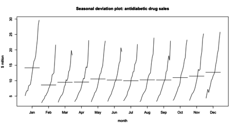
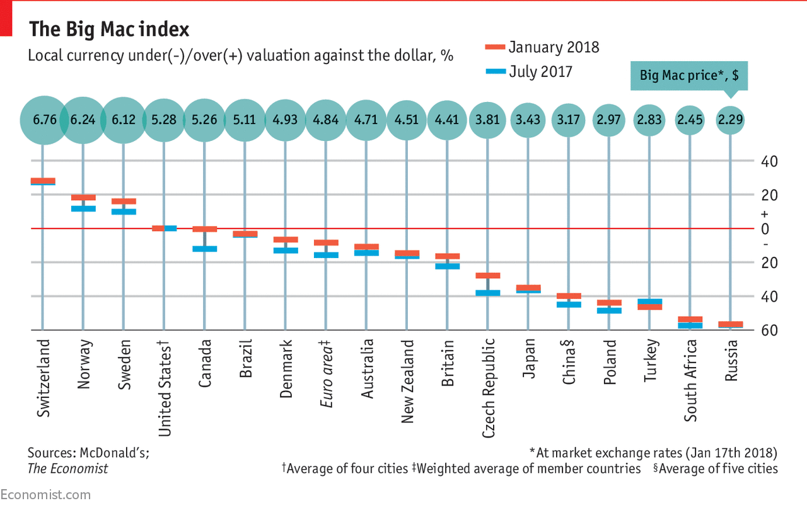

Using moving average:
Also called moving mean or rolling mean and it uses averages of different subsets of data. By graphing these averages, we solve seasonality and noise problems.

Using seasonal subseries chart:
Also called seasonal deviation plot. This is used by extracting a series from the big data. It helps focus on the trends within a smaller scale so it helps solving any problems with unclear trends or any noise problems.

Using index origin:
This is by using an index that represent a 0 value. Using the function,
Percent change= ((Each score - Index origin)/Index origin)*100
we can find percentages that relate to a specific value thus it helps focuses on the trends and reduces seasonality.
